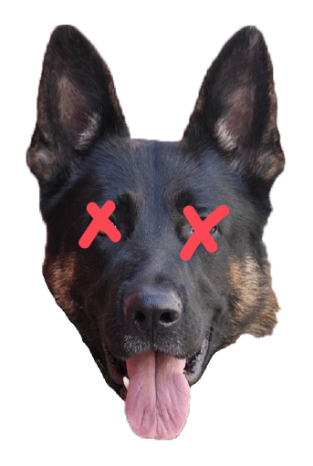
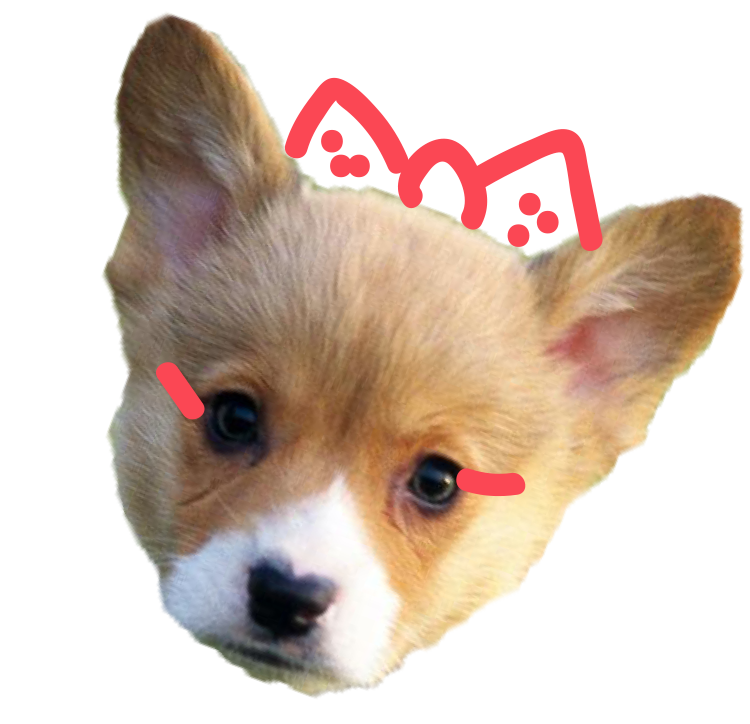

Japan has found an answer to loneliness, despair, fear, disgust and uncertainty.
Hint:
It’s alive, stands on four legs and barks. Well, so much the better if the gloom weighing us down can be so easily dispelled. Or is it?
Japan’s pet boom is an old story by now. In a country panicking over its plummeting birthrate, there are now many more pets than children. Dogs and cats combined have outnumbered children under 16 since 2003 — 19.2 million vs. 17.9 million that year, 23.2 million vs. roughly 17 million in 2009.
23.2
pets
VS.
17
children
*in millions
In Japan designer labels such as Chanel, Dior, Hermès and Gucci offer luxury dog products.
This canine couture doesn't come cheap. A poodle pullover can cost $250 (around £160) or more. In many parts of Tokyo, it is easier to buy clothes for dogs than for children. Boutiques sell everything from frilly frocks to designer jeans, from nappies to organic nibbles, and "doggie bags" and buggies or pushchairs to transport them in.
The pet industry is estimated to be worth more than ¥1tn a year (around £8.2bn) and has expanded into gourmet dog food stores, hot spring resorts, yoga classes and restaurants where dogs sit on chairs to eat organic meals. Despite the economic stagnation, people seem happy to spend any spare money on photo sessions, massages and treats for their four-legged "babies".
The average fertility rate is now 1.39 children per woman well below the number needed to keep the population stable.
Hint:
"The most important reason for Japan's declining birthrate is less sex," says Dr Kunio Kitamara, director of Japan's Family Planning Research Centre.
Japan has, in effect, a self-imposed one-child policy. Government projections show if current trends continue, today's population of 128 million will fall to 43 million over the next century. Economic stagnation has hit young men particularly hard. More than 10 million people aged between 20 and 34 still live with their parents. They can't afford to get married and start a family, but for the odd luxury or treats for their dogs, they can – and do – splash out.
Toshiko Horikoshi says:
"Japanese

dog owners think a
dog is
like a child"

, says Horikoshi.
"I have
no children,
so I
really
love my
two
dogs.”
Toshiko Horikoshi is a successful eye surgeon, with a private clinic, a stylish apartment, a Porsche and two pet pooches: Tinkerbell, a chihuahua, and Ginger, a poodle. Tinkerbell and Ginger have their own room and a wardrobe full of designer clothes. They have jumpers, dresses, coats and fancy dress outfits, neatly hung on jewelled hangers; hats, sunglasses and even tiny shoes. Horikoshi says she shops for her dogs most weekends and they get new clothes each season. In Tokyo, it is easier for Horikoshi to find a canine daycare centre for Tinkerbell and Ginger than it would be to find a nursery place for a child. If Akiba and his partner decide to go on holiday, they can pay $100 a night to leave Kotaro in a dog hotel.
For dogs in urgent need of exercise after a lifetime being pushed or carried around, there are spas and onsens, hot springs, which look identical to the ones for humans.
For $100 (£65) a session, an attendant in a wetsuit will give a dog one-to-one swimming lessons, relaxing bubble baths, body massages using aromatherapy oils, deep-pore cleansing and mud packs, and even flossing or manicure services.
Many dogs are "regulars" who come at least once a week running up annual bills of $5,000 (£3,200) or more. When the unthinkable happens, there are even temples where dead dogs are laid to rest with full Buddhist rites: a deluxe funeral and cremation ceremony can cost $8,000 (£5,000) or more.
Japan's population fell by a record number last year and in the wake of the earthquake and nuclear disasters.
Hint:
The 2012 Kamaishi earthquake occurred near the city of Kamaishi, Japan. The magnitude 7.3 shock generated a small tsunami, with waves up to 1 m high, that hit Ishinomaki in Miyagi Prefecture.
The National Institute of Population Research is expecting there to be a further decline in births this year, says deputy director Ryuichi Kaneko. "We realised that we are living in dangerous times," he says. "Many young people are even more hesitant to have children now."
One thing is certain:
Everything Japan has tried so far – introducing maternity leave, increasing child benefit, providing nursery places has failed to arrest its demographic decline. Fresh thinking will be needed to persuade more Japanese people that in the long-term, man's best friend can be no substitute for man himself.